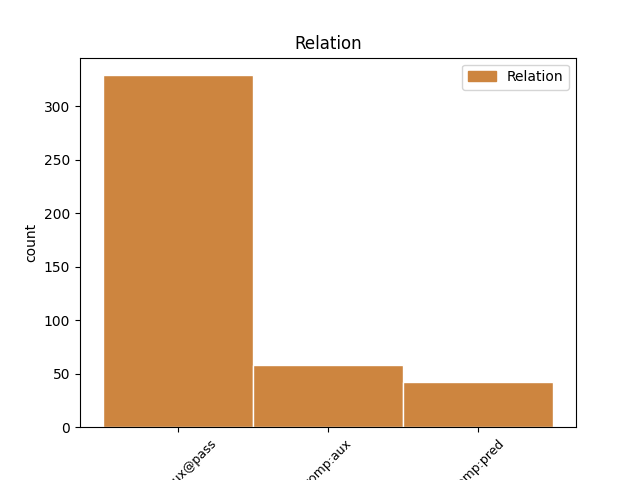
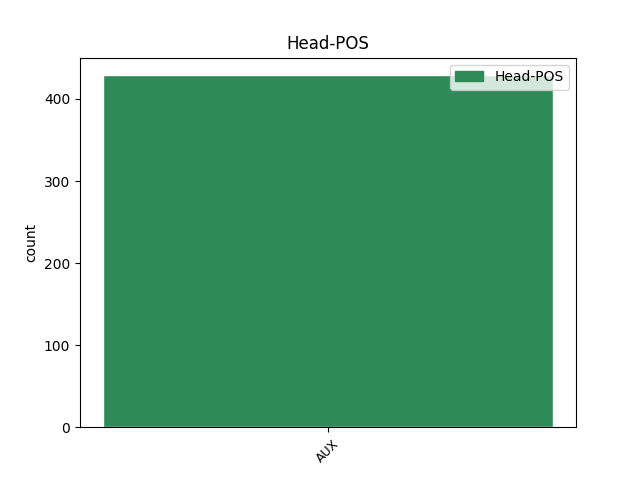
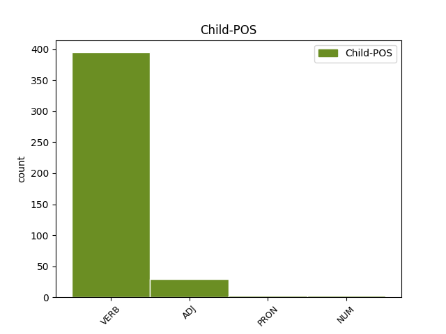

Distribution of features within this leaf



Agreement Rules sorted by frequency.
When the head token is AUX and the dependent token is VERB.
1 Orice _ _ _ _ 0 _ _ _
2 funcție _ _ _ _ 0 _ _ _
3 poate _ _ _ _ 0 _ _ _
4 accesa _ _ _ _ 0 _ _ _
5 o _ _ _ _ 0 _ _ _
6 variabilă _ _ _ _ 0 _ _ _
7 externă _ _ _ _ 0 _ _ _
8 , _ _ _ _ 0 _ _ _
9 referindu _ _ _ _ 0 _ _ _
10 -se _ _ _ _ 0 _ _ _
11 la _ _ _ _ 0 _ _ _
12 aceasta _ _ _ _ 0 _ _ _
13 prin _ _ _ _ 0 _ _ _
14 numele _ _ _ _ 0 _ _ _
15 ei _ _ _ _ 0 _ _ _
16 , _ _ _ _ 0 _ _ _
17 dacă _ _ _ _ 0 _ _ _
18 acest _ _ _ _ 0 _ _ _
19 nume _ _ _ _ 0 _ _ _
20 a _ _ _ _ 0 _ _ _
21 fost fi AUX Vap--sm Gender=Masc|Number=Sing|VerbForm=Part 0 _ _ _
22 declarat declara VERB Vmp--sm Gender=Masc|Number=Sing|VerbForm=Part 21 comp:aux@pass _ SpaceAfter=No
23 . _ _ _ _ 0 _ _ _
When the head token is AUX and the dependent token is ADJ.
1 Era _ _ _ _ 0 _ _ _
2 cel _ _ _ _ 0 _ _ _
3 mai _ _ _ _ 0 _ _ _
4 bun _ _ _ _ 0 _ _ _
5 povestitor _ _ _ _ 0 _ _ _
6 și _ _ _ _ 0 _ _ _
7 cel _ _ _ _ 0 _ _ _
8 mai _ _ _ _ 0 _ _ _
9 spiritual _ _ _ _ 0 _ _ _
10 profesor _ _ _ _ 0 _ _ _
11 , _ _ _ _ 0 _ _ _
12 iar _ _ _ _ 0 _ _ _
13 glumele _ _ _ _ 0 _ _ _
14 lui _ _ _ _ 0 _ _ _
15 te _ _ _ _ 0 _ _ _
16 dispuneau _ _ _ _ 0 _ _ _
17 , _ _ _ _ 0 _ _ _
18 oricât _ _ _ _ 0 _ _ _
19 de _ _ _ _ 0 _ _ _
20 amărât amărât ADJ Afpms-n Definite=Ind|Degree=Pos|Gender=Masc|Number=Sing 23 comp:pred _ _
21 ai _ _ _ _ 0 _ _ _
22 fi _ _ _ _ 0 _ _ _
23 fost fi AUX Vmp--sm Gender=Masc|Number=Sing|VerbForm=Part 0 _ _ _
24 . _ _ _ _ 0 _ _ _
When the head token is AUX and the dependent token is NUM.
1 Calul _ _ _ _ 0 _ _ _
2 s- _ _ _ _ 0 _ _ _
3 a _ _ _ _ 0 _ _ _
4 rănit _ _ _ _ 0 _ _ _
5 la _ _ _ _ 0 _ _ _
6 prima _ _ _ _ 0 _ _ _
7 săritură _ _ _ _ 0 _ _ _
8 și _ _ _ _ 0 _ _ _
9 chiar _ _ _ _ 0 _ _ _
10 dacă _ _ _ _ 0 _ _ _
11 a _ _ _ _ 0 _ _ _
12 fost fi AUX Vmp--sm Gender=Masc|Number=Sing|VerbForm=Part 0 _ _ _
13 primul prim NUM Momsrly Case=Acc,Nom|Definite=Def|Gender=Masc|Number=Sing|NumForm=Word|NumType=Ord 12 comp:pred _ _
14 cea _ _ _ _ 0 _ _ _
15 mai _ _ _ _ 0 _ _ _
16 mare _ _ _ _ 0 _ _ _
17 parte _ _ _ _ 0 _ _ _
18 din _ _ _ _ 0 _ _ _
19 tură _ _ _ _ 0 _ _ _
20 nu _ _ _ _ 0 _ _ _
21 a _ _ _ _ 0 _ _ _
22 condus _ _ _ _ 0 _ _ _
23 niciodată _ _ _ _ 0 _ _ _
24 într-adevăr _ _ _ _ 0 _ _ _
25 cursa _ _ _ _ 0 _ _ _
26 . _ _ _ _ 0 _ _ _
When the head token is AUX and the dependent token is PRON.
1 Ion _ _ _ _ 0 _ _ _
2 Minulescu _ _ _ _ 0 _ _ _
3 a _ _ _ _ 0 _ _ _
4 fost fi AUX Vmp--sm Gender=Masc|Number=Sing|VerbForm=Part 0 _ _ _
5 unul unul PRON Pi3msr Case=Acc,Nom|Gender=Masc|Number=Sing|Person=3|PronType=Ind 4 comp:pred _ _
6 dintre _ _ _ _ 0 _ _ _
7 cei _ _ _ _ 0 _ _ _
8 care _ _ _ _ 0 _ _ _
9 , _ _ _ _ 0 _ _ _
10 recunoscându _ _ _ _ 0 _ _ _
11 -i _ _ _ _ 0 _ _ _
12 talentul _ _ _ _ 0 _ _ _
13 în _ _ _ _ 0 _ _ _
14 pictură _ _ _ _ 0 _ _ _
15 , _ _ _ _ 0 _ _ _
16 a _ _ _ _ 0 _ _ _
17 influențat _ _ _ _ 0 _ _ _
18 -o _ _ _ _ 0 _ _ _
19 în _ _ _ _ 0 _ _ _
20 sensul _ _ _ _ 0 _ _ _
21 aderării _ _ _ _ 0 _ _ _
22 la _ _ _ _ 0 _ _ _
23 mișcarea _ _ _ _ 0 _ _ _
24 modernă _ _ _ _ 0 _ _ _
25 . _ _ _ _ 0 _ _ _
Disagree Examples:
1 Orice _ _ _ _ 0 _ _ _
2 referire _ _ _ _ 0 _ _ _
3 cât _ _ _ _ 0 _ _ _
4 de _ _ _ _ 0 _ _ _
5 cât _ _ _ _ 0 _ _ _
6 clară _ _ _ _ 0 _ _ _
7 la _ _ _ _ 0 _ _ _
8 el _ _ _ _ 0 _ _ _
9 ar _ _ _ _ 0 _ _ _
10 fi _ _ _ _ 0 _ _ _
11 fost fi AUX Vmp--sm Gender=Masc|Number=Sing|VerbForm=Part 0 _ _ _
12 fatal _ _ _ _ 0 _ _ _
13 de _ _ _ _ 0 _ _ _
14 primejdioasă primejdios ADJ Afpfsrn Case=Acc,Nom|Definite=Ind|Degree=Pos|Gender=Fem|Number=Sing 11 comp:pred _ SpaceAfter=No
15 . _ _ _ _ 0 _ _ _
1 Riscul _ _ _ _ 0 _ _ _
2 ar _ _ _ _ 0 _ _ _
3 fi _ _ _ _ 0 _ _ _
4 fost fi AUX Vmp--sm Gender=Masc|Number=Sing|VerbForm=Part 0 _ _ _
5 neînchipuit _ _ _ _ 0 _ _ _
6 de _ _ _ _ 0 _ _ _
7 mare mare ADJ Afpfsrn Case=Acc,Nom|Definite=Ind|Degree=Pos|Gender=Fem|Number=Sing 4 comp:pred _ _
8 chiar _ _ _ _ 0 _ _ _
9 și _ _ _ _ 0 _ _ _
10 dacă _ _ _ _ 0 _ _ _
11 ar _ _ _ _ 0 _ _ _
12 fi _ _ _ _ 0 _ _ _
13 știut _ _ _ _ 0 _ _ _
14 ce _ _ _ _ 0 _ _ _
15 trebuia _ _ _ _ 0 _ _ _
16 să _ _ _ _ 0 _ _ _
17 facă _ _ _ _ 0 _ _ _
18 pentru _ _ _ _ 0 _ _ _
19 asta _ _ _ _ 0 _ _ _
20 . _ _ _ _ 0 _ _ _
1 În _ _ _ _ 0 _ _ _
2 nici _ _ _ _ 0 _ _ _
3 o _ _ _ _ 0 _ _ _
4 situație _ _ _ _ 0 _ _ _
5 publică _ _ _ _ 0 _ _ _
6 sau _ _ _ _ 0 _ _ _
7 particulară _ _ _ _ 0 _ _ _
8 nu _ _ _ _ 0 _ _ _
9 se _ _ _ _ 0 _ _ _
10 recunoștea _ _ _ _ 0 _ _ _
11 că _ _ _ _ 0 _ _ _
12 ar _ _ _ _ 0 _ _ _
13 fi _ _ _ _ 0 _ _ _
14 existat _ _ _ _ 0 _ _ _
15 vreun _ _ _ _ 0 _ _ _
16 moment _ _ _ _ 0 _ _ _
17 în _ _ _ _ 0 _ _ _
18 care _ _ _ _ 0 _ _ _
19 cele _ _ _ _ 0 _ _ _
20 trei _ _ _ _ 0 _ _ _
21 puteri _ _ _ _ 0 _ _ _
22 să _ _ _ _ 0 _ _ _
23 fi _ _ _ _ 0 _ _ _
24 fost fi AUX Vmp--sm Gender=Masc|Number=Sing|VerbForm=Part 0 _ _ _
25 altfel _ _ _ _ 0 _ _ _
26 grupate grupat ADJ Afpfp-n Definite=Ind|Degree=Pos|Gender=Fem|Number=Plur 24 comp:pred _ SpaceAfter=No
27 . _ _ _ _ 0 _ _ _
1 La _ _ _ _ 0 _ _ _
2 turneul _ _ _ _ 0 _ _ _
3 de _ _ _ _ 0 _ _ _
4 calificare _ _ _ _ 0 _ _ _
5 rezervat _ _ _ _ 0 _ _ _
6 echipelor _ _ _ _ 0 _ _ _
7 din _ _ _ _ 0 _ _ _
8 Europa _ _ _ _ 0 _ _ _
9 vor _ _ _ _ 0 _ _ _
10 participa _ _ _ _ 0 _ _ _
11 opt _ _ _ _ 0 _ _ _
12 formații _ _ _ _ 0 _ _ _
13 , _ _ _ _ 0 _ _ _
14 care _ _ _ _ 0 _ _ _
15 au _ _ _ _ 0 _ _ _
16 fost fi AUX Vap--sm Gender=Masc|Number=Sing|VerbForm=Part 0 _ _ _
17 repartizate repartiza VERB Vmp--pf Gender=Fem|Number=Plur|VerbForm=Part 16 comp:aux@pass _ _
18 în _ _ _ _ 0 _ _ _
19 două _ _ _ _ 0 _ _ _
20 grupe _ _ _ _ 0 _ _ _
21 preliminare _ _ _ _ 0 _ _ _
22 . _ _ _ _ 0 _ _ _
1 Este _ _ _ _ 0 _ _ _
2 unul _ _ _ _ 0 _ _ _
3 dintre _ _ _ _ 0 _ _ _
4 politicienii _ _ _ _ 0 _ _ _
5 cei _ _ _ _ 0 _ _ _
6 mai _ _ _ _ 0 _ _ _
7 activi _ _ _ _ 0 _ _ _
8 , _ _ _ _ 0 _ _ _
9 a _ _ _ _ 0 _ _ _
10 cărui _ _ _ _ 0 _ _ _
11 competență _ _ _ _ 0 _ _ _
12 a _ _ _ _ 0 _ _ _
13 fost fi AUX Vap--sm Gender=Masc|Number=Sing|VerbForm=Part 0 _ _ _
14 recunoscută recunoaște VERB Vmp--sf Gender=Fem|Number=Sing|VerbForm=Part 13 comp:aux@pass _ _
15 chiar _ _ _ _ 0 _ _ _
16 și _ _ _ _ 0 _ _ _
17 de _ _ _ _ 0 _ _ _
18 adversarii _ _ _ _ 0 _ _ _
19 politici _ _ _ _ 0 _ _ _
20 . _ _ _ _ 0 _ _ _